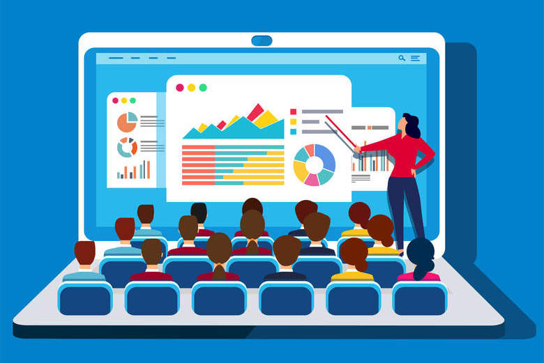
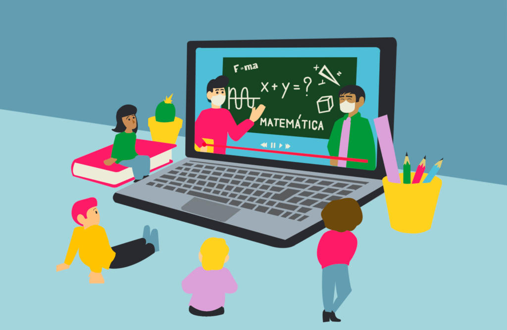
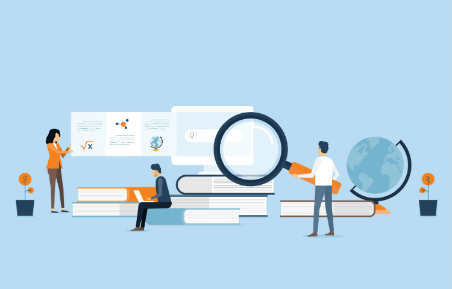
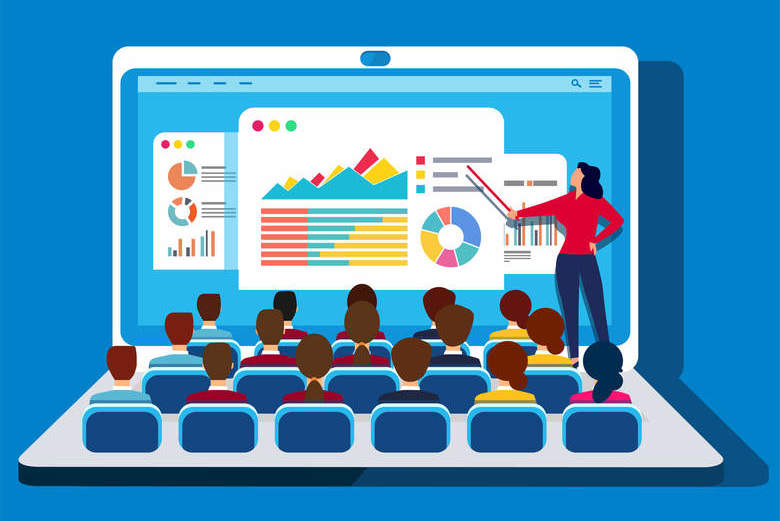
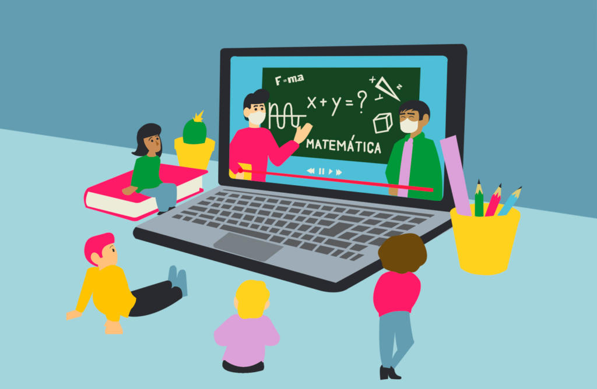
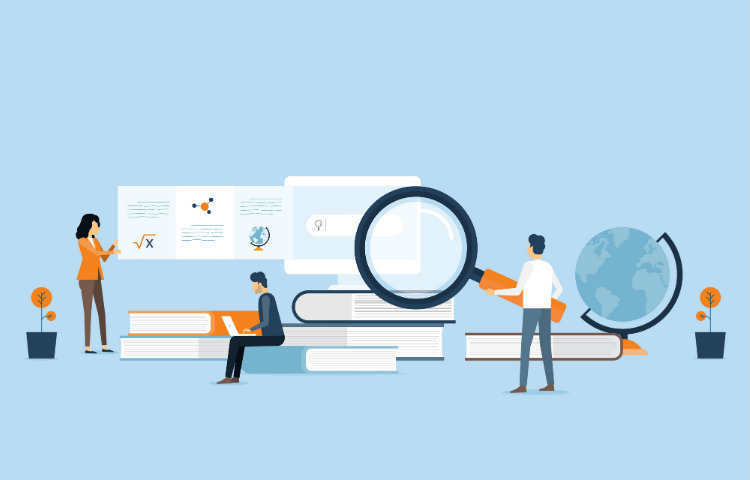

OBJETIVOS
A quarta ODS tem como objetivo garantir uma educação válida e de qualidade para todo ser humano até 2030. De meninos e meninas até juvens e adultos, do ensino fundamental até o superior, existe um consenso sobre o poder de transformação da educação na vida do indivíduo. A educação educação inclusiva, equitativa e de qualidade também objetiva desenvolver uma consciência sustentável para que as gerações futuras preservem o planeta.
COMO GARANTIR ESSE OBJETIVO?
É fato que garantir a educação inclusiva e abrangente é um dos maiores desafios para o Brasil. É de conhecimento geral que a garantia a educação é um dos principais pilares de uma sociedade desenvolvida e, com as enormes barreiras economicas e sociais presentes no país, esse tópico não é o mais assistido. A educação transforma o indivíduo seja profissionalmente ou socialmente, em seu entendimento como fator importante para a manutenção da vida ou em sua descoberta de capacidades produtivas e transformadoras; com diversos aspectos que impactam negativamente no processo do aprendizado da criança até a iniciação do jovem no mercado de trabalho, se faz necessário incentivos para que o desenvolvimento não seja prejudicado.
Alguns projetos patrocinados por instituições privadas promovem a educação de qualidade para aquele profissional que não conseguiu ainda uma primeira oportunidade no mercado de trabalho ou que pensa em mudar de carreira. O programa Elas Na Tech, por exemplo, ajuda atualmente diversas mulheres a ingressar no ramo da tecnologia e ter um contato próximo com desenvolvimento web.
PROGRAMAS EDUCACIONAIS